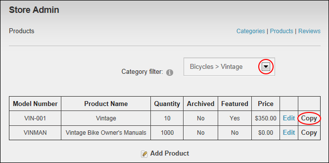
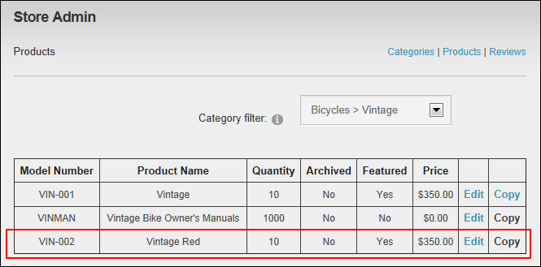

Copying a Product
Catalog Managers can copy an existing product in the Store and modify one or more fields to create a new product using the Store Admin module.
If you wish to add customers who purchase this product to a Security Role, you must create the role before beginning this tutorial.
- On the Store Admin module, click the Products link.
- At Category Filter, select the category of the product you want to copy.
- Click the Copy link.

- Modify one or more fields as required to create the new product.
-
Click the Update button.
The new product is now displayed in the Store Catalog module and a summary is displayed to Catalog Managers in the Product list.
